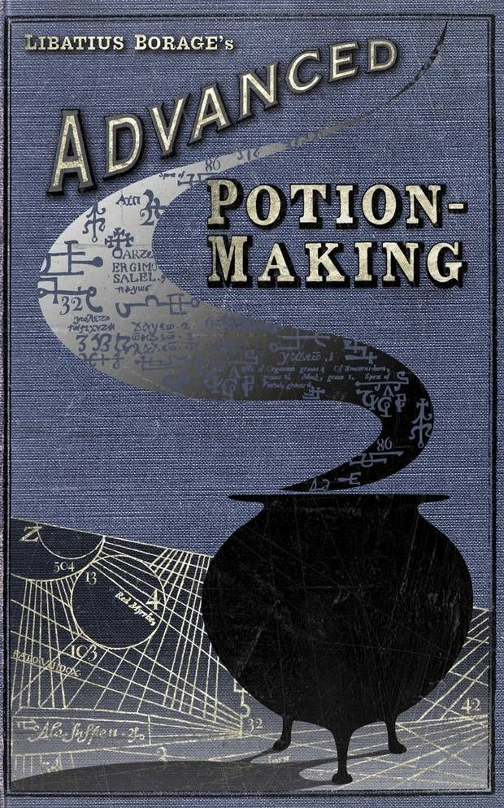
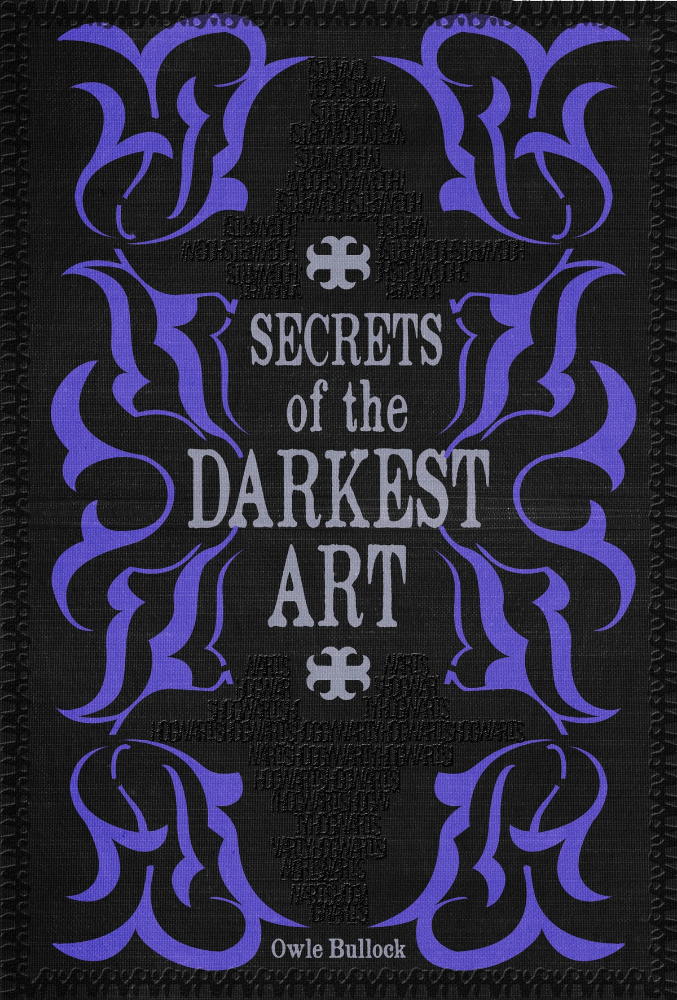
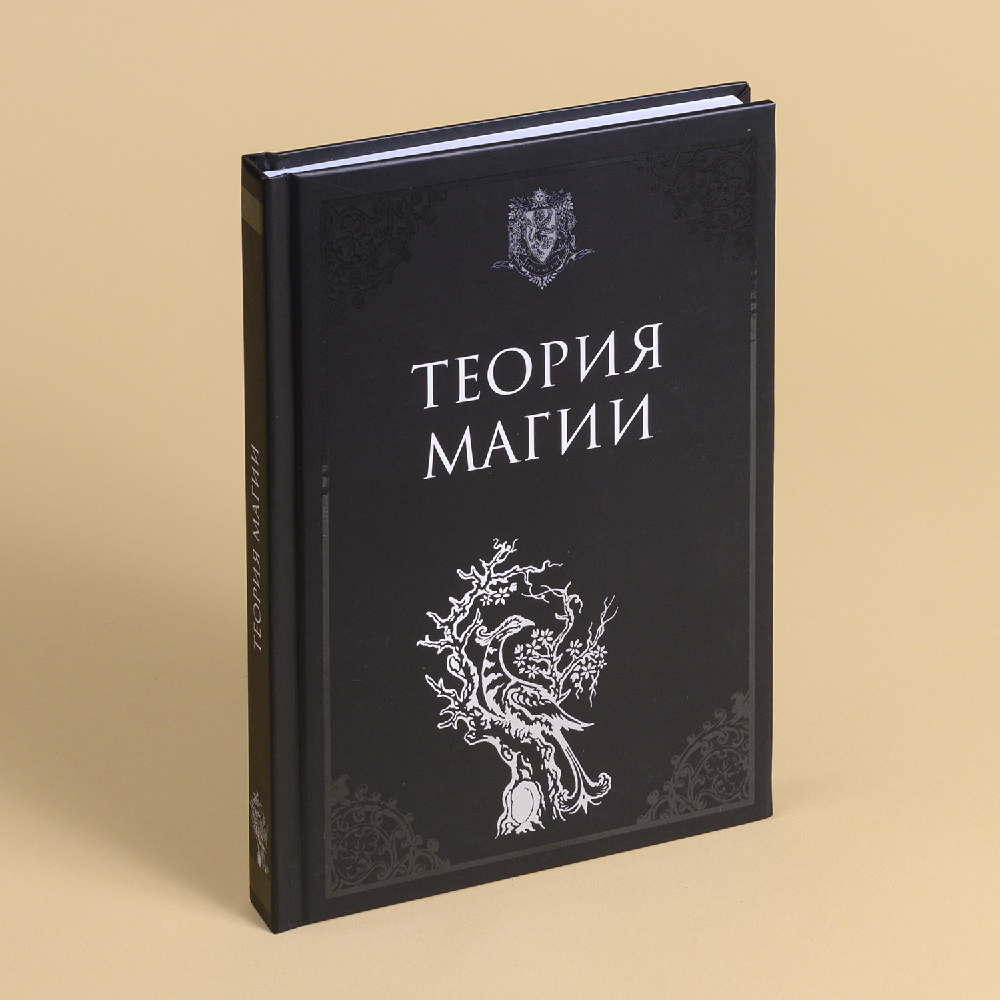
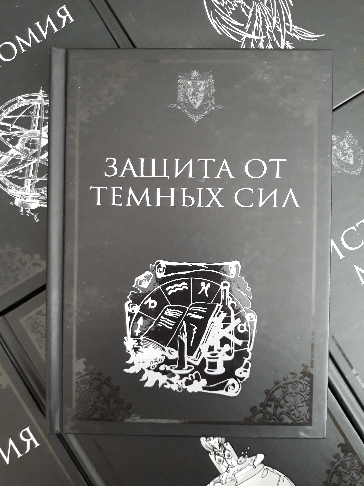
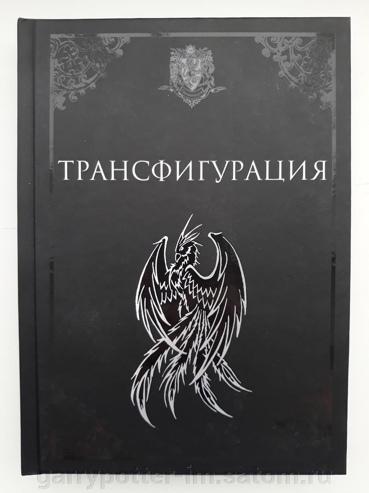

Будьте осторожны, ведь это необычные книги, они могут вас удивить,а то и поразить.. Не верите? Так убедитесь сами)
Учебники по Зельеварению

Темная магия

Волшебство для начинающих

Обороняющая магия

Сборники

Книга - учебник "Расширенный курс зельеварения" с пометками Принца - Полукровки из мира Гарри Поттера. На выбор 2 книги:... в мягкой глянцевой обложке, состоящая из 104 состаренных страниц в мягкой и в твердой обложке состоящей из 215 состаренных страниц. Различие между двумя вариантами книг: в книге с тонкой обложкой присутствует теоретическая часть с пометками принца полукровки и небольшим количеством рецептов зелий в заметках, в книге с толстой обложке теоретическая часть немного расширена, а также есть практическая часть с подробными рецептами 15 зелий, включая зелье, которое готовил Гарри Поттер в фильме, кроме того в толстой книге больше всевозможных пометок и иллюстраций от Принца Полукровки. Книга Зельеварение написана от лица Либациуса Бораго - знаменитого зельевара и оформлена в стиле библиотеки Хогвартса. Книга по зельеварению попалась Гарри Поттеру в книге и фильме "Гарри Поттр и Принц-Полукровка на шестом курсе, с помощью неё он отличился на уроке зельеварение, благодаря пометкам от Принца - Полукровки. Внутри книги есть главы об аксиомах зельеварения, теория о приготовлении зелий, закон универсального зелья, рассказано о периодическом законе Менделеева, алхимии и многом другом. После каждой главы есть вопросы, как в настоящем учебнике, а так же место для заметок! Книга дополнена рисунками от руки Принца - Полукровки и картинками.
Тёмные искусства (англ. Dark Arts) — это заклинания и магические практики, задуманные как способные причинить ощутимый вред другим людям. ...Используются, как правило, со злыми намерениями[1]. Волшебников, использующих Тёмные искусства, называют тёмными магами, самым могущественным из которых считался Лорд Волан-де-Морт, лидер Пожирателей Смерти.
«Скоромагия: заочный курс колдовства для начинающих» (англ. Kwikspell) — пособие, по которому бедный сквиб Аргус Филч хотел научиться магии. Пурпурный конверт, лежавший ...на столе, заметил Гарри Поттер в кабинете завхоза. И пока Филч отвлёкся на проказы Пивза и вынужден был выйти из комнаты, заглянул в него из любопытства. Мальчик прочёл прилагающийся к письму пергамент, исписанный витиеватыми серебряными буквами, и даже успел просмотреть первые страницы книги. Вошедший Филч тут же заметил, что конверт, в котором лежало пособие, находится в полуметре от изначального места. Примечательно то, что Филч не устроил скандал по поводу того, что второкурсник позволил себе копаться в вещах завхоза, а лишь сказал, что это — почта его друга.
Боевые заклинания — это группа заклинаний, направленных исключительно на нанесение ущерба здоровью противника. ...Кроме как в боевой ситуации не используются. Некоторые из нижеперечисленных могут быть использованы в достаточно жёсткой дуэли.
Трансфигурация (англ. Transfiguration; буквально — «видоизменение», «преображение») — дисциплина, изучающая магические способы превращения одних ...Трансфигурация (англ. Transfiguration; буквально — «видоизменение», «преображение») — дисциплина, изучающая магические способы превращения одних